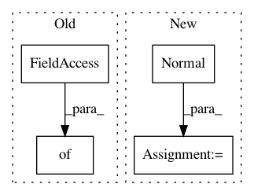

096d6fa062ad178b0e777652b9bf4ed65e6d3aee,pymc3/tests/test_step.py,TestStepMethods,check_trace,#TestStepMethods#Any#,174
Before Change
random_seed=1,
progressbar=False,
step=step_method(),
step_kwargs={"homepath": self.temp_dir})
elif step_method.__name__ == "NUTS":
step = step_method(scaling=model.test_point)
trace = sample(0, tune=n_steps,
After Change
n_steps = 100
with Model() as model:
x = Normal("x", mu=0, sd=1)
y = Normal("y", mu=x, sd=1, observed=1)
if step_method.__name__ == "SMC":
trace = sample(draws=200,
random_seed=1,
progressbar=False,
In pattern: SUPERPATTERN
Frequency: 3
Non-data size: 4
Instances
Project Name: pymc-devs/pymc3
Commit Name: 096d6fa062ad178b0e777652b9bf4ed65e6d3aee
Time: 2018-08-17
Author: aloctavodia@gmail.com
File Name: pymc3/tests/test_step.py
Class Name: TestStepMethods
Method Name: check_trace
Project Name: tensorlayer/tensorlayer
Commit Name: 6ca2a6359dc1374bfb211da8680f3d5f319cdaa5
Time: 2019-05-16
Author: 1402434478@qq.com
File Name: examples/reinforcement_learning/tutorial_bipedalwalker_a3c_continuous_action.py
Class Name: ACNet
Method Name: choose_action
Project Name: tensorlayer/tensorlayer
Commit Name: a6652b0c1997bb47dd502bf674e0b3b9b2d09d23
Time: 2019-05-16
Author: 1402434478@qq.com
File Name: examples/reinforcement_learning/tutorial_bipedalwalker_a3c_continuous_action.py
Class Name: ACNet
Method Name: choose_action